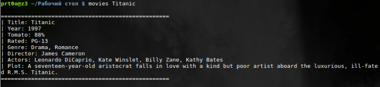
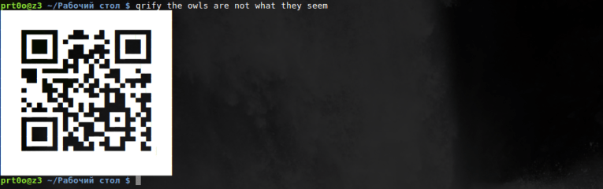

Содержание статьи
Устанавливаем bash скрипты в Linux
Сначала скачиваем необходимые ресурсы:
Затем заходим в скопированный каталог:
Проверяем и переходим к последнему стабильному выпуску:
Запускаем скрипт установки с помощью:
Если вам не нужны все скрипты, а только некоторые, то приведенные ниже команды позволят вам выбрать сценарии для установки.
Установка всех скриптов:
Установка одного скрипта:
Вот собственно и весь процесс установки. Теперь я дам небольшое описание для каждого сниппета.
Предоставляет прогноз погоды на 3 дня. Без аргументов он будет отображать погоду по вашему местоположению, а определит он его по ip адресу.
Также может отображаться текущая фаза луны.
Предоставляет возможность просмотра видео с YouTube.
Вы можете использовать ytview -c [название канала], чтобы увидеть последние видео этого исполнителя.
Вы можете использовать ytview -s [видео которое ищем] или просто ytview [видео которое ищем] для поиска видео.
Как-то кривенько сработало, должен был выдать нумерованный список видеозаписей. Ну да ладно, я выбрал первую)
Читайте также: Аналоги CCleaner: инструменты для очистки Linux Mint
Предоставляет информацию о курсе акций определенных компаний.
Кстати, проверил. Действительно так.
Предоставляет данные о wan, lan, router, dns, mac и ip geolocation.
Конвертирует валюту, основываясь на обменных курсах реального времени.
Враппер для openssl, который позволяет быстро шифровать и дешифровать файлы.
|
2 |
Быстрый поиск, который отображает соответствующую информацию о фильме.

Самый быстрый способ найти {command options | code pieces} которые вам нужны. Поддерживает несколько языков и множество команд bash.
Механизм рекомендаций, который предоставляет три аналогичных элемента, на примере заданного элемента. Также может предоставить информацию по данному элементу. Допустимыми являются: шоу, книги, музыка, художники, фильмы, авторы, игры.
Сперва не заработало, потому как нужен API Key.
Его можно получить на этом сайте. Ну естественно после регистрации. Далее создаем простой текстовый файл .bash_profile в домашнем каталоге и прописываем в нем export TASTE_API_KEY=»yourAPIKeyGoesHere», где в кавычках указываем API Key. Все работает, как оказалось.
Принимает любую строку текста и превращает ее в QR код. Это полезно для отправки ссылок или сохранения последовательности команд на вашем телефоне.

Получает полную ссылку из ее короткой версии. Я попробовал первый попавшийся линк из твиттора и все получилось.
В итоге мы получили с вами набор очень интересных bash скриптов, которые можно использовать чтобы немного отвлечься, но также некоторые из них (а мне кажется большинство) могут действительно пригодится. Желаю всем удачи. Надеюсь что у вас проявится интерес к написанию своих bash скриптов, статей по этому поводу можно найти целое множество.